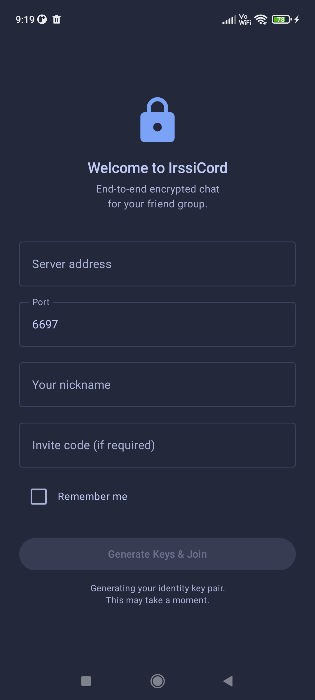
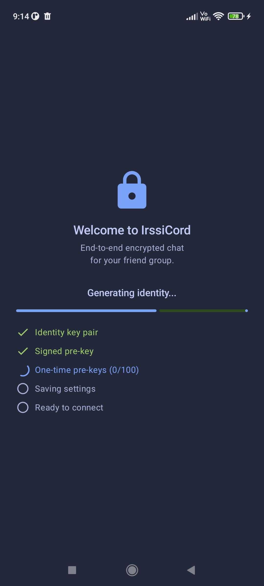
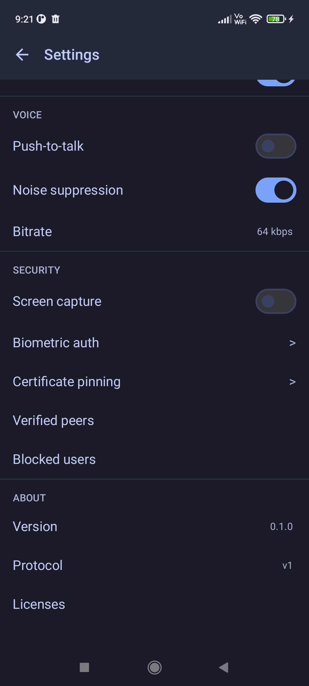

Android Client
Native Android client with end-to-end encryption, push notifications, and Material Design.
Overview
The IRCord Android client is built with Kotlin and uses a C++ NDK layer for all cryptographic operations. The user interface follows Material Design guidelines and supports both dark and light themes out of the box.
Encryption is handled through the Signal Protocol, accessed via a native JNI bridge. This means that key generation, session management, and message encryption all happen in native code — the same battle-tested C++ crypto engine used by the desktop client.
Key features of the Android client include:
- Channels and direct messages with full end-to-end encryption
- Voice rooms and private calls using WebRTC audio
- Push notifications via Firebase Cloud Messaging
- Biometric authentication for app unlock (fingerprint or face)
- Material Design UI with dark and light theme support
Installation
The IRCord Android client is distributed as a standalone APK. You can download it directly from the
IRCord website or open an ircord:// link to be directed to the download page.
Requirements
- Android 10+ (API level 29 or higher)
- ARM64 processor (virtually all modern Android devices)
- Approximately 30 MB of storage
Installation Steps
- Download the latest APK from the IRCord website.
- If prompted, allow "Install from unknown sources" for your browser or file manager. This setting is found under Settings → Apps → Special access → Install unknown apps.
- Open the downloaded APK file and tap Install.
- Once installed, launch IRCord from your app drawer.
Setup & Registration
On first launch, IRCord will guide you through a short setup process to connect to a server and create your account.
Connecting to a Server
Enter the server address (hostname or IP) and port number. The client will establish a TLS 1.3 connection and verify the server certificate using a Trust on First Use (TOFU) model.
Registration
- Choose a username and password.
- An Ed25519 identity key pair is generated on your device during registration. This key is the foundation of your cryptographic identity — it never leaves your device.
- Key material is stored securely in the Android Keystore, which provides hardware-backed key storage on supported devices. This means your keys are protected even if the device filesystem is compromised.
- Your public key is uploaded to the server so other users can establish encrypted sessions with you.

Login
Enter your server address, port, nickname and optional invite code. Tap "Generate Keys & Join" to create your identity.

Key Generation
Your Ed25519 identity key pair, signed pre-key, and 100 one-time pre-keys are generated locally on your device.
Channels & Messages
IRCord supports both public channels and private direct messages. All message content is encrypted before it leaves your device — the server never has access to plaintext.
Joining Channels
Tap the + icon in the channel list to join or create a channel. Enter the channel name
(prefixed with #) and you will be added to the channel immediately. The channel list is
accessible from the navigation drawer or sidebar, depending on your screen size.
Direct Messages
To start a private conversation, tap on a user's name in a channel member list or search for them by username. A DM session is established automatically using the X3DH key agreement protocol, followed by the Double Ratchet algorithm for ongoing message encryption.
Encryption Details
- Channel messages use the Sender Keys protocol. When you send your first message in a channel, a Sender Key Distribution Message (SKDM) is included so that other participants can decrypt your messages.
- Direct messages use X3DH for initial key agreement and the Double Ratchet algorithm for forward secrecy. Each message uses a unique encryption key.
Encryption is entirely automatic — there are no manual steps required to secure your conversations.
Voice & Calls
IRCord supports real-time voice communication through voice rooms and private one-on-one calls, powered by WebRTC audio.
Voice Rooms
Voice rooms are associated with channels. To join a voice room, open the channel menu and select Join Voice. Multiple users can participate in the same voice room simultaneously.
Private Calls
For one-on-one conversations, tap the call icon on the DM screen. The recipient will receive a push notification with the option to accept or decline the call.
Voice Controls
- Push-to-talk: Hold the microphone button to transmit. Release to stop.
- Voice activation: Your microphone activates automatically when you speak above a configurable threshold.
- Mute: Disable your microphone. Others will see a muted indicator next to your name.
- Deafen: Disable both your microphone and speaker. Useful when you need to step away.
Push Notifications
IRCord uses Firebase Cloud Messaging (FCM) to deliver push notifications when the app is in the background or the device is asleep. This ensures you never miss an important message, even when you are not actively using the app.
How It Works
When a message arrives for you while you are offline, the server sends a lightweight wake-up signal through FCM. Your device receives this signal, wakes the app briefly, and the app connects to the server to retrieve and decrypt the actual message content.
Notification Categories
- Direct messages: Notifications for incoming DMs.
- Channel mentions: Triggered when someone mentions your username in a channel.
- System notifications: Server announcements, connection status changes, and updates.
Configuration
Notification preferences are configurable per channel. Navigate to Settings → Notifications to customize which channels and categories trigger notifications. You can also long-press a channel in the channel list to quickly toggle notifications for that channel.
Security Features
The Android client includes several layers of security beyond message encryption to protect your data at rest and in use.
| Feature | Description |
|---|---|
| Biometric authentication | Require fingerprint or face recognition to unlock the app. Uses the Android BiometricPrompt API for secure, hardware-backed authentication. |
| Screen capture protection |
Prevents screenshots and screen recording within the app using Android's
FLAG_SECURE window flag. This is optional and can be toggled in settings.
|
| Certificate pinning (TOFU) | On first connection, the server's TLS certificate is stored locally. Subsequent connections verify against the stored certificate, protecting against man-in-the-middle attacks even if a certificate authority is compromised. |
| Database encryption | Local message storage uses SQLCipher with a 256-bit AES encryption key. The encryption key is stored in the Android Keystore, providing hardware-backed protection for all locally stored messages and metadata. |
| Key storage | All cryptographic key material (identity keys, session keys, pre-keys) is stored in the Android Keystore, which uses the device's secure hardware (TEE or StrongBox) when available. |
Settings
The Settings screen provides control over the appearance, behavior, and security of the Android client.
Theme
Choose between dark and light themes. The app defaults to following your system theme preference, but you can override this to use a specific theme at all times.
Notifications
Configure notification behavior on a per-channel basis. Options include enabling or disabling DM alerts, channel mention notifications, and system notifications. You can also set a quiet hours schedule to suppress notifications during specific times.
Security
- Biometric lock: Enable or disable fingerprint/face authentication on app launch.
- Screen capture protection: Toggle
FLAG_SECUREto prevent screenshots within the app.
Connection
- Server address: View or change the server you are connected to.
- Auto-reconnect: When enabled, the app will automatically reconnect if the connection drops.

Settings screen — voice controls (PTT, noise suppression, bitrate), security options (screen capture, biometric auth, certificate pinning), and version info.